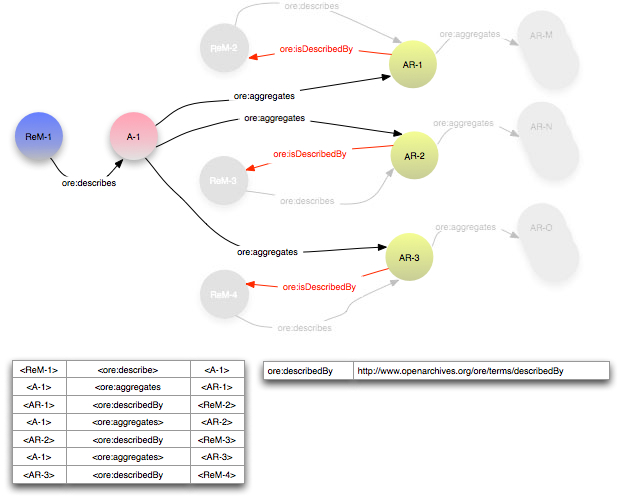
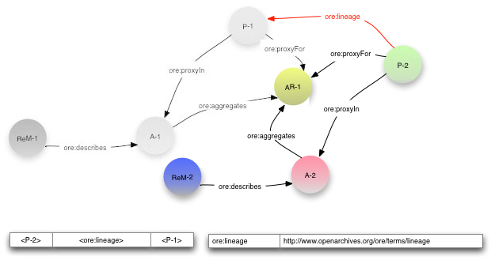

|
Open Archives Initiative Object Reuse and Exchange |
|
Open Archives Initiative Object Reuse and Exchange |
DO NOT USE THIS SPECIFICATION, see instead the CURRENT ORE SPECIFICATIONS.
This document was part of an alpha release and has been superseded.
Open Archives Initiative Object Reuse and Exchange (OAI-ORE) defines standards for the description and exchange of aggregations of Web resources. This document describes the abstract data model that is the foundation for these standards. This model is conformant with the Architecture of the World Wide Web [Web Architecture] and leverages Named Graphs [Named Graph] as a mechanism for encapsulating RDF descriptions [RDF Concepts] about aggregations. This specification is one of several documents comprising the OAI-ORE specification and user guide.
1. Introduction
1.1 Notational Conventions
1.2 Namespaces
2. Foundations
3. Data Model Entities
3.1 Aggregation
3.2 Aggregated Resource
3.3 Resource Map
3.4 Resource Map Document
3.5 Proxy
3.6 Proxy Document
4. Basic RDF Graph of a Resource Map
4.1 Relationship between a Resource
Map and an Aggregation
4.2 Metadata about the
Resource Map
4.3 Relationships between the Aggregation and Similar Resources
4.4 Aggregated
Resources and the Aggregation Graph
4.5 Relationships to other Resources and Types
5. Extending a Resource Map to express Relationships between Aggregations
5.1 Asserting that an Aggregated Resource is a Constituent of another Aggregation
5.2 Nesting Aggregations
6. Proxies to establish Aggregation-Specific Identities for Aggregated Resources
6.1 Using Proxies for Relationships among Aggregated Resources
6.2 Using Proxies as the Target of other Relationships
6.3 Expressing the Lineage of an Aggregated Resource
7. Structural Constraints on a Resource Map
8. References
A. Acknowledgements
B. Change Log
This specification is one of several documents comprising the ORE specification and user guide. It describes the details of the ORE Model and may not be the appropriate for readers who are interested in a high-level overview, or who are mainly interested in implementing applications that make use of the model. The ORE User Guide - Resource Map Overview is a more appropriate starting point for those readers.
The Architecture of the World Wide Web [Web Architecture] uses the term Resource to refer to any item of interest. Some web content, such as a stand-alone HTML document, is contained within one Resource. But frequently a logical unit of web information is actually an aggregation of Resources. Examples of these aggregations are:
These aggregations exhibit the following characteristics:
A mechanism to associate identities with these aggregations and describe them in a machine-readable manner would make them visible to Web agents, including browsers and crawlers, and tools could be created to make them visible in user interfaces. This could be useful for a number of applications and contexts. For example:
This specification describes the ORE Model that includes the notion of a Resource Map (ReM), a Resource that asserts an identity for an aggregation of Resources. It also asserts the constituents, structure, metadata, and external relationships to other Web Resources of that aggregation by encapsulating a set of RDF [RDF Concepts] triples, in the manner of a Named Graph [Named Graph]. This data model conforms to the concepts defined in the Architecture of the World Wide Web [Web Architecture].
The ORE Model can be implemented in a variety of serialization formats. The details of these formats are described in companion ORE documents. The nature of a particular serialization format and its respective expressiveness may affect the details of the mapping from the model to the implementation. This mapping is described in detail in each serialization specification.
The keywords "MUST", "MUST NOT", "REQUIRED", "SHALL", "SHALL NOT", "SHOULD", "SHOULD NOT", "RECOMMENDED", "MAY", and "OPTIONAL" in this document are to be interpreted as described in RFC 2119 [IETF RFC 2119].
The use of fonts is as follows:
This specification uses the following namespaces and prefixes to indicate those namespaces:
| Prefix | Namespace URI | Description |
|---|---|---|
dc |
http://purl.org/dc/elements/1.1/ |
Dublin Core elements |
dcterms |
http://purl.org/dc/terms/ |
Dublin Core terms |
ore |
http://www.openarchives.org/ore/terms/ |
ORE vocabulary terms |
owl |
http://www.w3.org/2002/07/owl# |
OWL vocabulary terms |
rdf |
http://www.w3.org/1999/02/22-rdf-syntax-ns# |
RDF vocabulary terms |
The ORE Data Model builds on the following foundation technologies and architectures.
Readers unfamiliar with these technologies are encouraged to refer to their reference documents. A brief introduction to the relevant aspects of these technologies is also available in the ORE Primer.
The ORE Abstract Data Model (ADM) includes the entities that are described in the remainder of this section.
An Aggregation is a Resource with information content that is a set of Resources.
Each Aggregation is identified by a single URI. This specification uses URI-A to denote URIs that identify Aggregations.
Because URI-A identfies the Aggregation, it SHOULD be used as the target of links refering to the set of Resources as a logical unit. Examples of such links are citation, review, annotation, and the like.
It SHOULD be possible to unamibiguously infer from URI-A the URI of at least one of the Resource Map(s) that describe the Aggregation. To enable this inference it is RECOMMENDED that a URI-A is a protocol-based URI, and that the mechanism for dereferencing the URI-A returns information from which a client can access URI-R. Details about this are described in ORE implementation documents.
Furthermore, because a URI-A identifies the Aggregation, it SHOULD NOT be a URI used for another purpose, such as a URI of a specific manifestation of some content - for example, the PDF of some scholarly paper. It is important not to confuse the Aggregation with its possible
representations provided using the HTTP protocol. A server may provide a
human-readable "splash page" as a representation of an Aggregation when
URI-A is dereferenced, but it remains the case that the resource
identified by URI-A is the Aggregation.
An Aggregated Resource is a Resource that is a constituent of an Aggregation. Any Resource MAY be defined as an Aggregated Resource of one or more Aggregations, and such designation does not alter the nature of the Resource itself. The manner in which a Resource is defined as an Aggregated Resource in an Aggregation is described in a later section.
Each Aggregated Resource is identified by a single URI. This specification uses URI-AR to denote URIs that identify Aggregated Resources. It is recommended that URI-AR is a protocol-based URI.
A Resource Map (ReM) is a Resource with information content that asserts that another Resource is an Aggregation and describes that Aggregation. The association between a Resource Map and an Aggregation is described in a later section. This description MUST include an enumeration of the Aggregated Resources. It MAY include addtional prosperities about the Aggregation and Aggregated Resources, such as relationships among the Aggregated Resources, relationships from the Aggregated Resources to other Resources, and other properties.
Each Resource Map MUST be identified by a single protocol-based URI. This specification uses URI-R to denote URIs that identify Resource Maps.
The relationship between Resource Maps and Aggregations is one-to-may. Each Resource Map MUST identify one Aggregation. Each Aggregation MUST be identified by one Resource Map, but MAY be identified by multiple Resource Maps.
A Resource Map identified by URI-R MUST NOT assert an Aggregation where URI-A = URI-R.
A dereference of a URI-R, which identifies a Resource Map, MUST return a Representation that is a Resource Map Document. This Representation is a serialization from which the information content of the corresponding Resource Map can be extracted as a set of triples, an RDF Graph. The RDF Graph asserted by a Resource Map MUST conform to a well-defined structure. The syntax of a Resource Map Document is particular to a serialization format. Serialization formats are defined in companion ORE specifications.
A Proxy is a Resource defined by one Resource Map that maps to a single Aggregated Resource defined by that same Resource Map. In this manner the URI of the Proxy can then be the subject or object of triples that assert relationships specific to the Aggregated Resource in the context of the respective Aggregation. The use of Proxies is described in a later section.
Each Proxy MUST be identified by a single URI that MUST be unique to the Aggregation described by Resource Map in which the Proxy is defined. This specification uses URI-P to denote URIs that identify Proxies.
A dereference of a URI-P, which identifies a Proxy, MAY return a single Representation that is a Proxy Document. This is an implementation-specific serialization from which the triples that associate the Proxy with the respective Aggregated Resource and Aggregation may be derived.
A Resource Map is a specialization of a Named Graph. Like any Named Graph it is a Resource - a first-class object in the Web Architecture - that expresses an RDF Graph via the triples it encodes. In a general Named Graph, the structure and composition of the RDF Graph expressed by the triples are not defined, and there are no restrictions on the Resources identified by nodes in the graph.
The RDF Graph expressed by a Resource Map must conform to a number of restrictions. The graph MUST be connected, with its structure defined as follows (and expanded upon in the numbered section accompanying each bullet):
The remainder of this section explains the components of this graph in a step-by-step progression. The constraints on the graph are summarized a table later in this document.
Later sections describe how to extend this RDF Graph to assert relationships between Aggregations and establish Aggregation-specfic URIs for Aggregated Resources.
A Resource Map MUST include one triple with an ore:describes predicate. The subject of this triple MUST be the URI-R of the Resource Map. The Object is the URI-A of the Aggregation described by the triples defined by the Resource Map. The URI-A that is the object of this triple MUST NOT be the same as URI-R. A Resource Map MUST NOT include more than one triple with the ore:describes predicate.
The ore:describes relationship asserts that the Resource denoted by the subject is a resource of type ore:ResourceMap and the Resource denoted by the object is a resource of type ore:Aggregation. Therefore, the explicit inclusion in the Resource Map of triples asserting these types is OPTIONAL.
A Resource Map MAY assert one or more triples with the ore:isDescribedBy predicate, which is the inverse of ore:describes. Note that because of the nature of owl:inverseOf [OWL], the triple <URI-R> <ore:describes> <URI-A>, which MUST be asserted in the Resource Map, implies <URI-A> <ore:isDescribedBy> <URI-R>.Therefore, the explicit assertion in a Resource Map of this inverse triple is OPTIONAL, but its implied existance makes it possible for clients to access to a Resource Map corresponding to an Aggregation. Implementation documents described protocol-specific mechanisms for deriving this inverse relation upon access to URI-A.
A Resource Map MAY assert one or more triples with the ore:isDescribedBy predicate where the URI-R defined as the object is different from the Resource Map asserting thte triple. This makes it possible for a Resource Map to provide clients with access points to other serializations, in other formats, of a Resource Map.
The figure below illustrates the RDF Graph showing the relationship between a Resource Map and an Aggregation. The triples producing the graph are included below the graph. The table to the right of the triples shows the URIs used to identify the Resources and relationships. Additional details on this figure are as follows:

A Resource Map MUST express minimal metadata properties about the Resource Map. Those metadata properties are:
A Resource Map MAY include additional metadata properties about the Resource Map. Examples of additional metadata properties are:
A Resource Map MAY assert metadata properities about the Aggregation. These metadata properties MAY be defined by a variety of vocabularies.
The figure below shows an RDF Graph expressed by a Resource Map that includes metadata properties about Resource Map and Aggregation. Note that aspects of the graph already described are grayed-out to emphasize the concepts introduced by the figure. This convention will be used for the remainder of this document along with other simplifications to make the figures easier to read. Note also that in this example, the objects of all the metadata relationships are literals. Alternatively, the objects may be URIs denoting other Resources.
A Resource Map MAY include one or more triples, with URI-A as the subject, which assert that the Aggregation is a Resource with content that is similar to another Resource. The predicate MAY be either ore:similarTo or rdfs:seeAlso, depending on the strength of the assertion of similarity. Formally, ore:similarTo is defined as a subproperty of rdfs:seeAlso.
The ore:similarTo relationship asserts that the Aggregation has similar intellectual content to the Resource identified by the object of the triple. This form of similarity resembles the notion of "bibliographic similarity" among works, expressions, manifestations, and items in the Functional Requirements for Bibliographic Records [FRBR]. An example of of the use of ore:similarTo in the scholarly communication context is to define a relationship between an aggregation and a Resource with non-protocol-based URI like a Digital Object Identifier [DOI] or an INFO URI [INFO].
The weaker rdfs:seeAlso relationship MAY also be included in the Resource Map. One example of the use of rdfs:seeAlso in a Resource Map is to express a relationship between an Aggregation that is a journal article and a Resource that is a review of that article.
The use of ore:similarTo in the RDF Graph is shown in the figure below.
A Resource Map MUST include one or more triples with the ore:aggregates predicate to assert that the Resource identified by the URI-A that is the subject has the constituent Aggregated Resource identified by the URI-AR that is the object. A URI-AR MUST NOT be the same as the URI-A of the Aggregation or the URI-R that describes that Aggregation.
The ore:aggregates relationship defines that the Resource denoted by the subject is a Resource of type ore:Aggregation. Therefore, the explicit inclusion in the Resource Map of a triple asserting the type is OPTIONAL.
The figure below shows the RDF Graph with the addition of triples with the ore:aggregates predicate. This subgraph of the RDF Graph, rooted in the Aggregation with one or more ore:aggregates relationships to Aggregated Resources, is known as the Aggregation Graph.
For a Resource Map http://example.org/ReM-1, the Aggregation Graph is defined by the following SPARQL query [SPARQL]
PREFIX ore: <http://www.openarchives.org/ore/terms/>
CONSTRUCT { ?a ore:aggregates ?ar1 . }
WHERE { <http://example.org/ReM-1> ore:describes ?a .
?a ore:aggregates ?ar1 . }
A Resource MAY include additional triples that assert properties about the Resource Map, Aggregation, Aggregated Resources, or other related Resources or Literals. The RDF graph produced by the addition of these triples MUST be connected. Formally that means that all nodes in the graph MUST be reachable via a traversal that begins at the node denoting the Resource Map and follows the edges corresponding to the predicates expressed in the triples.
Some appropriate uses for additional relationships are:
The global scope of these additional assertions corresponds to the usual manner in which RDF statements are interpreted. That is, the meaning of these additional triples are not constrained or altered by their "assertion context" in a Resource Map. Each assertion is essentially independent, and therefore a triple with Subject URI-AR is a statement about that Aggregated Resource without reference to its existence in the respective Aggregation. Assertions about Resources local to the Aggregation are described in a later section.
The figure below shows the RDF Graph with the addition of triples expressing type semantics and other relationships to the Aggregation Graph.
This specification has thus far described the mechanisms for describing an individual Aggregation. This section describes mechanisms by which one Resource Map MAY assert relationships between Aggregated Resources and other Resource Maps or Aggregations.
A Resource Map MAY include one or more triples with the ore:isAggregatedBy predicate to assert that an Aggregated Resources is a constituent of other Aggregations.
A use case is a scholalry overlay journal (a virtual journal that includes papers by reference in contrast to creating local copiees of them). One paper might be included in multiple overlay journals. The editor of one journal would like to make clients aware of the presence of the paper in those other journals.
The figure below shows three Aggregations, A-1, A-2, and A-3, corresponding to the three journals. All include AR-3 as an Aggregated Resource. The Resource Map ReM-3, which describeds A-3, includes triples with the predicate ore:isAggregatedBy, asserting that AR-3 is an Aggregated Resource of A-1 and A-2.
As stated earlier, a Resource Map can assert any Resource as an Aggregated Resource. And, because an Aggregation is a Resource, a Resource Map can assert that a Resource, which is described as an Aggregation by another Resource Map, is itself an Aggregated Resource. The result is then recursive nesting of Aggregations. Note that this nesting MUST involve information from multiple Resource Maps, since one Resource Map MUST describe only one Aggregation.
A Resource Map that asserts another Aggregation as an Aggregated Resource MAY assert an ore:isDescribedBy relationship between this Aggregated Resource and the Resource Map describing the other Aggregation. This informs clients of the Resource Map of the nesting.
Note that this use of the ore:isDescribedBy predicate has the same semantics as described earlier. The predicate asserts that the subject of the triple, which is an Aggregation, is described by the object of the triple, which is a Resource Map.
An example of a nested Aggregation is a journal consisting of multiple issues, each of which is an Aggregation of multiple articles, each of which may be an Aggregation in its own right. The figure below illustrates nested Aggregations, omitting some details of previous figures (e.g. metadata, typing). Aggregation A-1, described by ReM-1, has constituents AR-1, AR-2 and AR-3, which are are themselves Aggregations. Each of these "aggregated Aggregations" is described by a corresponding Resource Map (ReM-2, ReM-3, and ReM-4) which describes the Aggregated Resources and other aspects of these Aggregations. The sub-graphs associated with these other Resource Maps are intentionally grayed out to emphasize the fact that the triples relevant to this example are exclusive to ReM-1.

This specification has thus far used the URI-AR of an Aggregated Resource as the Subject or Object of triples. As described earlier, a URI-AR is not specific to the Aggregation - an individual URI-AR MAY be asserted within multiple Aggregations and MAY be used independent of any Aggregation. Thus, the use of URI-AR as the subject or object of triples does not imply any association with one Aggregation, or even with any Aggregation at all. This section describes the notion of a Proxy, which is a Resource that "stands for" an Aggregated Resouce in a manner that is specific to one Aggregation.
The URI-P of the Proxy MUST be unique to the Aggregation. This URI MAY then be used by the ReM as the subject and object of triples that express relationships specific to the Aggregation. A Resource Map MUST assert two triples to associate the Proxy with the Aggregation and Aggregated Resource. The first has the Proxy as the subject, the predicate ore:proxyFor, and the associated Aggregated Resource as the Object. The second has the Proxy as the subject, the predicate ore:proxyIn, and the associated Aggregation as the Object. A Resource Map MUST assert only one of each of these triples for each Proxy.
The remainder of this section describes use cases for Proxies and how to express them in the Resource Map
In some cases the relationships among Aggregated Resources that are asserted within a Resource Map have meaning only within the context of the Aggregation itself. An example is the assertion of Aggregation-specific sequencing between Aggregated Resources, expressing an ordered list where AR-1 follows AR-2 which follows AR-3. Without any sequencing information, the order of Aggregated Resources can not be inferred - they form an unordered set. It would not be legitimate for the Resource Map to express this sequencing by asserting a triple of the sort <AR-1> <hasNext> <AR-2>, since this fact is only true in the context of the specific Aggregation, and is not a "global" fact. As noted earlier, in RDF the meaning of triples are not constrained or altered by their "assertion context" in a Resource Map. Each assertion is essentially independent, and therefore a triple with subject or object URI-AR is a statement about that Aggregated Resource without reference to its existence in the respective Aggregation.
The following figure illustrates how to express this Aggregation-specific sequencing through the use of proxies and their assertion in a Resource Map. As illustrated, the hypothetical predicate xyz:hasNext indicates a sequencing relationship between the two Aggregated Resources. The assertion of the Proxies P-1 and P-2, which are associated with the respective Aggregated Resource via the ore:proxyFor predicate and with the Aggregation via the ore:proxyIn predicate, makes it possible to assert this relationship in the context of the Aggregation.

As described above, the assertion of a Proxy within a Resource Map establishes an Aggregation-specific URI-P for one of the Aggregated Resources. Triples asserted external to the Aggregation MAY establish links to this Proxy, with semantics that the asserted Relationship is specific to the Aggregated Resource in the context of the Aggregation.
The figure below illustrates an example of this use of a Proxy. In the example, the Aggregation A-1 may be an overlay journal, which composes virtual issues by asserting Aggregations consisting of selected papers distributed over the Web. AR-1 is one of these selected papers. Note however that the URI AR-1 is simply the identity of the paper, which may be located on the authors own web pages or in some institutional repository. Thus, the triple <URI-2> <xyz:cites> <AR-1> implies no semantics about the selection of the paper for inclusion in the overlay journal. On the other hand, the triple <URI-1> <xyz:cites> <P-1>, where P-1 is asserted by the Resource Map to be the Proxy for AR-1, does imply these semantics.
The assertion of Proxies is OPTIONAL. This example demonstrates that it MAY make sense for an agency creating Resource Maps to assert these Proxies to provide appropriate link targets for outside clients.
As described earlier, the ore:isAggregatedBy predicate asserts that an Aggregated Resource in one Resource Map is also an Aggregated Resource in another Resource Map. Also, as stated one Aggregated Resource MAY be the subject of multiple ore:isAggregatedBy triples. In applications such as scholarly communication there is a need for a stronger relationship indicating lineage, which indicates that an Aggregated Resource originated or was sourced from another Aggregation. Lineage or provenance is a basis of integrity in scholarly communication.
A Resource Map MAY assert triples with the predicate ore:lineage to express this notion. The subject of ore:lineage MUST be a Proxy specific to the Aggregation and the object MUST be a Proxy specific to another Aggregation. One Proxy MUST NOT be the subject of more than one ore:lineage relationships.
The following figure illustrates the use of ore:lineage. Aggregation A-1 is an eScience result aggregating, with other Resources not shown, some data set, AR-1. Aggregation A-2 includes the same data set. Both Resource Maps establish proxies for that Aggregated Resource, P-1 in A-1 and P-2 in A-2, creating Aggregation-specific URIs for the data set. ReM-2 also asserts the triple <P-2> <ore-lineage> <P-1> to express the origin or provenance of the data set in Aggregation A-1.

The following table summarizes the constraints on the structure of an RDF Graph that serves as a Resource Map by specifying the minimum and maximum expected occurrences of Triples of varying forms.
The convention used in the table is that
ReM-1 is the URI of this Resource MapReM-i is the URI of another Resource MapA-1 is the URI of the Aggregation described by the Resource Map ReM-1AR-j is the URI of a resource which is aggregated into that Aggregation A-1URI-S is the URI of a ResourceURI-P is the URI of a type of RelationshipURI-O is the URI of a ResourceA-k is the URI of an Aggregation other than the Aggregation described by the Resource Map ReM-1P-j is the URI of a Proxy for a resource AR-j aggregated into the Aggregation A-1P-m is the URI of a Proxy for a resource AR-m aggregated into an Aggregation other than the Aggregation described by the Resource Map ReM-1| Subject | Predicate | Object | Occurs (Min, Max) |
Note |
|---|---|---|---|---|
| ReM-1 | ore:describes |
A-1 | (1, 1) |
Relationship between Resource Map and Aggregation (4.1) |
| A-1 | ore:isDescribedBy |
ReM-i | (0, *) |
Relationship between Resource Map and Aggregation (4.1) |
| ReM-1 | rdf:type |
ore:ResourceMap |
(0, 1) |
Typing of Resource Map (4.1) |
| ReM-1 | dc:creator |
literal or URI-O | (1, *) |
Metadata about Resource Map (Required) (4.2) |
| ReM-1 | dcterms:modified |
literal | (1, 1) |
Metadata about Resource Map (Required) (4.2) |
| ReM-1 | URI-P | literal or URI-O | (0, *) |
Metadata about Resource Map (Optional) (4.2) |
| URI-S | URI-P | ReM-1 | (0, *) |
Metadata about Resource Map (Optional) (4.2) |
| A-1 | ore:similarTo |
URI-O |
(0, *) |
Relationships between the Aggregation and Similar Resources (4.3) |
| A-1 | rdfs:seeAlso |
URI-O |
(0, *) |
Relationships between the Aggregation and Similar Resources (4.3) |
| A-1 | ore:aggregates |
AR-j | (1, *) |
Relationship between Aggregation and aggregated Resource (4.4) |
| A-1 | rdf:type |
ore:Aggregation |
(0, 1) |
Typing of Aggregation (4.4) |
| A-1 | URI-P | literal or URI-O | (0, *) |
Other properties of the Aggregation (4.2)/Relationships of Aggregation to Other Resources (4.5) |
| URI-S | URI-P | A-1 | (0, *) |
Relationships of Aggregation to Other Resources (4.5) |
| AR-j | URI-P | literal or URI-O | (0, *) |
Relationships of aggregated Resource to Other Resources (4.5) |
| URI-S | URI-P | AR-j | (0, *) |
Relationships of aggregated Resource to Other Resources (4.5) |
| URI-S | URI-P | URI-O | (0,*) |
Additional metadata in the Resource Map (4.5)
|
| AR-j | ore:isAggregatedBy |
A-k | (0, *) |
Relationship between aggregated Resource and Other Aggregation (5.1) |
| AR-j | ore:isDescribedBy |
ReM-i | (0, *) |
Relationship between aggregated Resource and Other Resource Map (5.2) |
| P-j | ore:proxyFor |
AR-j | (0, *) |
Relationship between Proxy and aggregated Resource (6.1) |
| P-j | ore:proxyIn |
A-1 | (0, *) |
Relationship between Proxy and Aggregation (6.1) |
| URI-S | URI-P | P-j | (0, *) |
Proxy as target of Relationships (6.2) |
| P-j | URI-P | literal or URI-O | (0, *) |
Proxy as target of Relationships (6.2) |
| P-j | ore:lineage |
P-m | (0, *) |
Lineage Relationship between Proxies (6.3) |
This document is the work of the Open Archives Initiative. Funding for Open Archives Initiative Object Reuse and Exchange is provided by the Andrew W. Mellon Foundation, Microsoft, and the National Science Foundation. Additional support is provided by the Coalition for Networked Information.
This document is based on meetings of the OAI-ORE Technical Committee (ORE-TC), with participation from the OAI-ORE Liaison Group (ORE-LG). Members of the ORE-TC are: Chris Bizer (Freie Universität Berlin), Les Carr (University of Southampton), Tim DiLauro (Johns Hopkins University), Leigh Dodds (Ingenta), David Fulker (UCAR), Tony Hammond (Nature Publishing Group), Pete Johnston (Eduserv Foundation), Richard Jones (Imperial College), Peter Murray (OhioLINK), Michael Nelson (Old Dominion University), Ray Plante (NCSA and National Virtual Observatory), Rob Sanderson (University of Liverpool), Simeon Warner (Cornell University), and Jeff Young (OCLC). Members of ORE-LG are: Leonardo Candela (DRIVER), Tim Cole (DLF Aquifer and UIUC Library), Julie Allinson (JISC), Jane Hunter (DEST), Savas Parastatidis (Microsoft), Sandy Payette (Fedora Commons), Thomas Place (DARE and University of Tilburg), Andy Powell (DCMI), and Robert Tansley (Google, Inc. and DSpace)
We also acknowledge comments from the OAI-ORE Advisory Committee (ORE-AC).

This work is licensed under a Creative Commons Attribution-Noncommercial-Share Alike 3.0 Unported License.
Use of this page is tracked to collect anonymous traffic data. See OAI privacy policy.